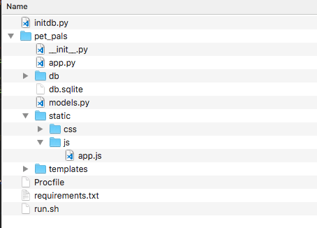
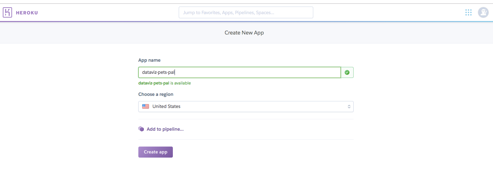
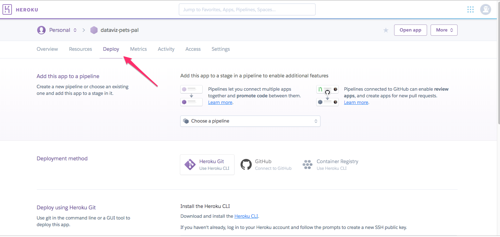

Objectives For Lesson 15.3
- Flask and building a web service for data
- We'll launch your data dashboard on the web.
Why We Learn?
You're building towards a full-stack service for data.
What does "full-stack" mean?
It means you're building a complete solution with minimal outside help:
- Backend - Setting up databases and getting your business logic and data in.
- Middleware - Flask as your system which interfaces between your backend and frontend
- Frontend - Dashboards and visualization
01-Ins_Basic_Flask_Plotly
We'll dive right into Flask, and display a graph via a web server.
You'll realize there are two sections:
/lineroute is the API.- The index page is your webpage.
This is a typical setup. Usually, we grab data from an API, and then display the data via visualizations. With Flask, you can do both at the same time.
Note
In our example, we're using Javascript to pull the data from the API which you have in your Flask. The data is not delivered through the passing of variables from the render_template method in Flask.
02-Stu_Song_Lyrics: Your Turn
Before we begin, in your student activity, there is a lyrics.py and a lyrics.txt. They are basically your data sources, and they are imported into your app.py file.
- collections is a standard Python library.
Counterhelps to count objects. - Same as the homework, where you tested your web scraping script to see if it's working before you integrate it into your Flask app, run the code and see the results.
Remember zip?
It combines iterables (dict or lists) into a single entity
To unzip, put the asterisk (*) in front of the iterable when using zip, because asterisk is to unpacks (or unzips in layman terms) a list-type container. Then assign the variables according to the respective order.
03-Ins_Fullstack_Flask_Plotly
This time, we're integrating our app with a SQLite database, and this is going to be part of your homework.
If you haven't:
Install flask_sqlalchemy: pip install flask_sqlachemy
What is the difference between using the SQLalchemy in the past and using flask_sqlalchemy?
Basically, flask_sqlalchemy is a wrapper library around SQLalchemy, so that Flask as a framework integrates well with SQLalchemy. Good wrapper libraries usually don't massively overwrite the original library itself.
Wrapper libraries are very common since developers don't like to repeat themselves when writing code.
Lesson 15.3
import pandas as pd
from flask import (
Flask,
render_template,
jsonify)
from flask_sqlalchemy import SQLAlchemy
app = Flask(__name__)
# The database URI
app.config['SQLALCHEMY_DATABASE_URI'] = "sqlite:///db/emoji.sqlite"
db = SQLAlchemy(app)
# Create our database model
class Emoji(db.Model):
__tablename__ = 'emoji'
id = db.Column(db.Integer, primary_key=True)
emoji_char = db.Column(db.String)
emoji_id = db.Column(db.String)
name = db.Column(db.String)
score = db.Column(db.Integer)
def __repr__(self):
return '<Emoji %r>' % (self.name)
lesson 10.1, 10-Ins_SQL_Alchemy_Revisited
# Dependencies
# ----------------------------------
# Imports the method used for connecting to DBs
from sqlalchemy import create_engine
# Imports the methods needed to abstract classes into tables
from sqlalchemy.ext.declarative import declarative_base
# Allow us to declare column types
from sqlalchemy import Column, Integer, String, Float
# Sets an object to utilize the default declarative base in SQL Alchemy
Base = declarative_base()
# Creates Classes which will serve as the anchor points for our Tables
class Dog(Base):
__tablename__ = 'dog'
id = Column(Integer, primary_key=True)
name = Column(String(255))
color = Column(String(255))
age = Column(Integer)
Lesson 10.3, taken from 10-Ins_Flask_with_ORM
import numpy as np
import sqlalchemy
from sqlalchemy.ext.automap import automap_base
from sqlalchemy.orm import Session
from sqlalchemy import create_engine, func
from flask import Flask, jsonify
#################################################
# Database Setup
#################################################
engine = create_engine("sqlite:///titanic.sqlite")
# reflect an existing database into a new model
Base = automap_base() # automap_base is to reflect. declarative_base() is to create a new database
# reflect the tables
Base.prepare(engine, reflect=True)
# Save reference to the table
Passenger = Base.classes.passenger
# Create our session (link) from Python to the DB
session = Session(engine)
#################################################
# Flask Setup
#################################################
app = Flask(__name__)
What is the difference between the two sets of code in terms of initialization? (You can also compare lesson 10.1, 10-Ins_SQL_Alchemy_Revisited)
flask_sqlalchemyprovides anapp.config['SQLALCHEMY_DATBASE_URL']for database creation, while if you use thesqlalchemylibrary raw, you have to create a bunch of code to get started.- But you still need to create the classes in Python, so that you can create your tables.
- Syntax is almost the same and you can compare it side-by-side, but because
flask_sqlalchemyis a wrapper library, it needs adb.SQLAlchemy(app)to extract the SQLAlchemy library from itself.
Now, we get the database stuff out of the way, I'm going to reiterate the MVC model again.
- Model: Get your data and business logic up first and make sure it's there.
- All the database and its data
- All the APIs
- View: Get your visuals up. You might have to do the controller first based on certain conditions, but try to get a template out first.
- To reference a file within your flask app, use the
{{ url_for('static', filename='js/app.js') }}in yourindex.html. url_for(endpoint, **values)generates a URL to the given endpoint with the method provided.'static'is generally the folder, since we use folders as directories for URLs.filenameis the path from'static'.- Controller: Connects and interface the Model and View together.
05-Evr_Flask_Requests
Ref: GET and POST methods
The web has many standard protocols in getting and sending data. We use primarily GET and POST. All browsers recognize them as standard.
GET
- You can use a URL route to retrieve data on the browser in the address bar.
- Less secure, has a data limit.
POST
- They are not visually exposed on the browser. It doesn't mean it is not used in the background.
- Standard protocol for
formsin HTML. Remember how I saidformsforce a web page reload? That's because HTML is inbuilt with the capability of sendingPOSTrequests throughforms, and they do it by redirections.
06_Ins_Flask_SQLAlchemy
In this activity, we are using a form to capture data via POST, and then storing it into a sqlite. If we trigger the /api/data endpoint, we should be able to see the data.
You start with an empty database. This is part of the data collection process in ETL.
The code is very similar to the previous activity.
07-Stu_Pet_Pals
In this activity, we are using a form to capture data via POST, and then storing it into a sqlite. If we trigger the /api/data endpoint, we should be able to see the data.
The code is very similar to the previous activity.
Bonus
Plotly has a geolocation visualizer. Look into the docs and try it out!
08-Ins_Pet_Pals_Refactor
In our previous activities, we build a web app and run it in our local machines. But for deployment standards, it's bad practice. We'll need to refactor code to make it deployable on the web.
Before we begin
Take a look at our folder structure
- The first layer contains:
- initdb.py -- Remember MVC? This is to initialize the database.
- requirements.txt -- It lists the libraries we use. We call these libraries, dependencies.
- run.sh -- this is a shell script file. Remember how we do certain commands in our terminal, such as
cd DataViz-Lesson-Plansandpython app.py? This helps to run such commands in sequence in a file. Widely used in production servers to ensure consistency. - Procfile is a file needed to launch your code into Heroku. We'll talk about it in the next activity.
- pet_pals folder -- contains your actual Flask app files
- pet_pals folder contains:
- Standard files which you've been working with so far to run Flask apps.
__init__.py- See https://docs.python.org/3/tutorial/modules.html#packages. Basically it "packages" your files, and it indicates the root level path for your app.- The root level path shouldn't be in the first layer, but in the
pet_palsfolder, because that is where your Flask app runs. The first layer contains the metadata (extra information) needed to run the app.
With this file structure, how do I run the file?
Run it at the directory where run.sh is. Type: sh runs.sh.
In the run.sh, it contains the following code: FLASK_APP=pet_pals/app.py flask run, where:
FLASK_APP=pet_pals/app.pystores the FLASK_APP variable in your environment.- I will demonstrate it in my
.bash_profilein my computer, but we won't go too deep because you're not training to be dev-ops engineers. flask runsimply runs theflaskcommand, with the action torunthe app, and the environment is given above. For documentation: http://flask.pocoo.org/docs/1.0/cli/- If you go to your terminal and type
flask, you will see the help page of the commandflask. This isflaskis an executable command on your terminal. - To reiterate, shell scripts such as
run.shallows you to standardize code which is run on terminals in a single file. That is all there is to it.
WHY ARE WE LEARNING THIS COMPLICATED STUFF?
Because you're deploying your app onto the World Wide Web, namely, Heroku.
Heroku, and most hosting services, doesn't know what kind of libraries or dependencies you need to run your app. The above will tell the service how to run your code, and publish it into the World Wide Web.
If in doubt, copy and paste.
Not like I want to cut corners but I doubt you can understand everything in one go. It will take time to digest.
Don't think our average salary is so easy to earn: https://www.payscale.com/research/US/Job=Data_Scientist_%2F_Engineer/Salary
09-Evr_Pet_Pals_Heroku
Guess what, this is for your homework.
- Prepare the application with additional configuration files (Procfile and requirements.txt)
- Create the Heroku application
- Prepare the Heroku database
We'll go step-by-step.
Part 1: Configuration Files
- We'll create a new conda environment just for this app. All of our project dependencies (requirements.txt) will be installed in this environment. Note: This should only contain python 3.6 and not anaconda.
- Run:
conda create -n pet_pals_env python=3.6 - Activate this environment before proceeding:
source activate pet_pals_env - Install gunicorn:
pip install gunicorn. This is a high performance web server that can run Flask app in a production environment - We'll also use Postgres, with
pip install psycopg2. Postgres is another database server software, similar to MySQL. - Make sure every dependencies are installed:
pip install flaskpip install flask-sqlalchemypip install pandas- Initialize the database with:
initdb.py - Run the app with:
sh run.sh
If you did everything above and your app runs normally, this means your application is working. Everything should be working before your code is loaded up into a web server!
Now that it works, run pip freeze > requirements.txt. It takes all the dependencies, and outputs them into a file.
Last, we create the Procfile, and put the following line in it: web: gunicorn pet_pals.app:app
- pet_pals is the name of the folder, and
__init__.pydetermines the root level of your app.
Part 2: Creating the Heroku App
- Sign up for Heroku. There is a free tier for it: https://www.heroku.com/pricing
- Create a new app. Name it however you want it, but the names are unique throughout Heroku. This means you probably can't copy my naming convention.
- 
- Go to the Deploy section, and follow the steps to deploy the app.
- 
- Although you can link Github with Heroku, we'll do the Heroku Git. So, you've to install Heroku Cli and the documentation is here: https://devcenter.heroku.com/articles/heroku-cli
Part 3: Prepare the Database
- Navigate to Resources, and look for Heroku Postgres under Add-ons. Make sure to use the Free Version:

- Under settings, click on
Reveal Config Variables. The connection string to the database should be available: - Heroku will automatically assign this URI string to the DATABASE_URL environment variable that is used within app.py. The code that is already in app.py will be able to use that environment variable to connect to the Heroku database:
# DATABASE_URL will contain the database connection string: app.config['SQLALCHEMY_DATABASE_URI'] = os.environ.get('DATABASE_URL', '') # Connects to the database using the app config db = SQLAlchemy(app)- After you've installed the Heroku Cli and running everything in Part 2, your files should be in Heroku. Run:
heroku run python initdb.py - You can open the application using
heroku openfrom the terminal.